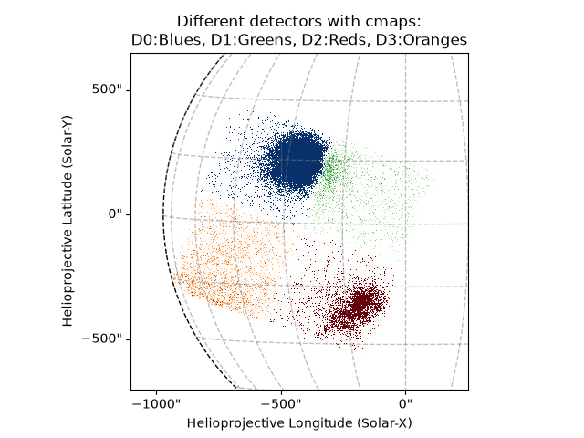
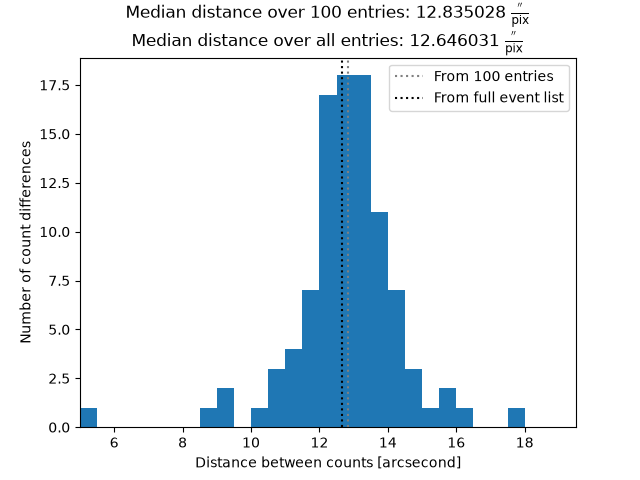
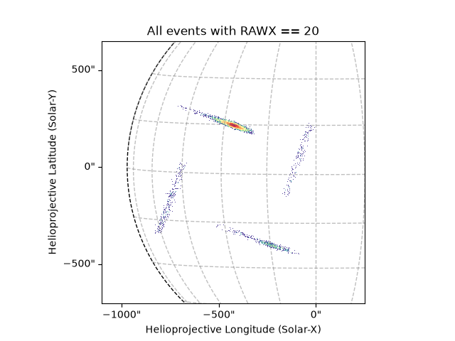
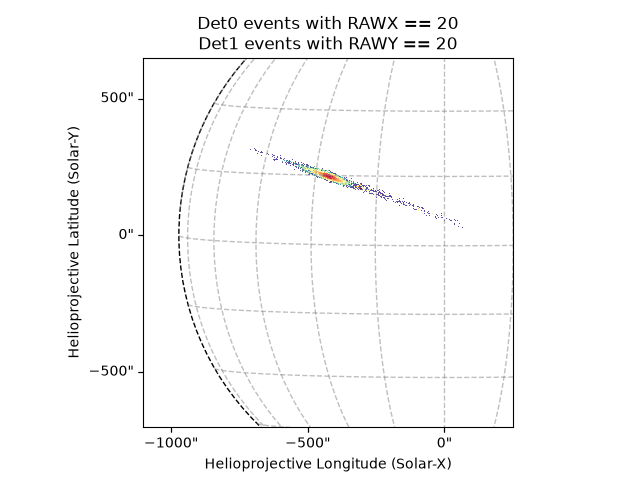
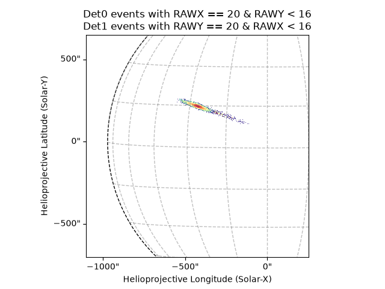
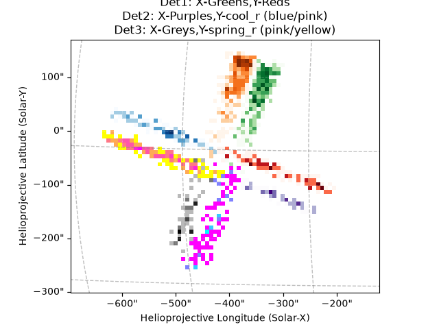
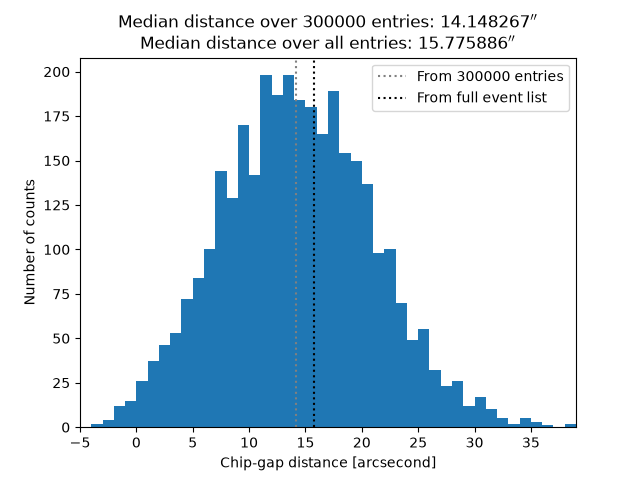

Note
Go to the end to download the full example code.
Obtaining NuSTAR Chip-gap Values
This example will be a little different to the others. This will show how certain hard-coded values were obtained rather than an example for an end-user to run.
This example shows obtaining the NuSTAR chip-gap values; the values that will allow us to plot the gap between different detectors.
Knowing the location of the chip-gap is important as we want to avoid any results coming from a region that the chip-gap runs through.
We could probably do this in a more standard way but we’ll use this script to gain the raw pixel resolution in arcseconds and also obtain a good location for the chip-gap.
We’ll then obtain hard coded values to create a lazy chip-gap locator function.
import ntpath
import os
import urllib.request
import astropy.units as u
import matplotlib.pyplot as plt
import numpy as np
from sunpy.coordinates import sun
from jdhsrpy import CHIP_GAP, PIX_GRID, RAW_PIX_DIFF, TEST_DATA_LOCATION
from jdhsrpy.io import read_filter_file
from jdhsrpy.list_filters import by_detector, by_time
from jdhsrpy.nustar_core import NustarEvt, draw_grid, utc_from_nustar_time
from jdhsrpy.utils import (
arcsec_points_to_shape,
pixel_coords_to_solar_coords,
rotate_coord,
)
Download an example “sunpos” NuSTAR EVT file.
url = f"{TEST_DATA_LOCATION}/test_nustar_data/nu20619003001A06_cl_sunpos.evt"
filename_evt = os.path.join(os.getcwd(), ntpath.split(url)[1])
if not os.path.isfile(filename_evt):
urllib.request.urlretrieve(url, filename_evt)
# url = f"{TEST_DATA_LOCATION}/test_nustar_data/nu20619003001A.mkf"
# filename_filter = os.path.join(os.getcwd(), ntpath.split(url)[1])
# if not os.path.isfile(filename_filter):
# urllib.request.urlretrieve(url, filename_filter)
filename_filter = "/Users/kris/Documents/umnPostdoc/projects/analysis/nustarNov2021/data/nsNov2021on17-19-21/nustarFiles/nsNov19/20619003001/event_cl/nu20619003001A.mkf"
Use the class to load in and work with the file.
nustar_object = NustarEvt(evt_filename=filename_evt)
Different detectors
To get a look at the different detectors from the solar data, we should filter in time to avoid any effects from drift.
However, let’s get as many counts in there as possible so let’s use
the evt_data event list instead of the usual cleaned_evt_data.
time0 = "2021-11-20T02:20:00"
time1 = "2021-11-20T02:30:00"
cut_time_list = by_time(nustar_object.evt_data, time0, time1)
Now it’s simple to get the images per detector.
bottom_left = [-1100, -700] << u.arcsec
top_right = [250, 650] << u.arcsec
det0_list = by_detector(cut_time_list, 0)
md0 = nustar_object.nustar_map(bottom_left, top_right, event_data=det0_list)
det1_list = by_detector(cut_time_list, 1)
md1 = nustar_object.nustar_map(bottom_left, top_right, event_data=det1_list)
det2_list = by_detector(cut_time_list, 2)
md2 = nustar_object.nustar_map(bottom_left, top_right, event_data=det2_list)
det3_list = by_detector(cut_time_list, 3)
md3 = nustar_object.nustar_map(bottom_left, top_right, event_data=det3_list)
This can be easily plotted.
d0_cmap = "Blues"
d1_cmap = "Greens"
d2_cmap = "Reds"
d3_cmap = "Oranges"
# now use it in plotting, this is now just Sunpy API stuff
fig = plt.figure()
ax = fig.add_subplot(projection=md0)
md0.plot(axes=ax, cmap=d0_cmap, vmax=np.min(md0.data[md0.data > 0]) * 1.1)
md1.plot(axes=ax, cmap=d1_cmap)
md2.plot(axes=ax, cmap=d2_cmap, vmax=np.min(md2.data[md2.data > 0]) * 1.1)
md3.plot(axes=ax, cmap=d3_cmap)
draw_grid(md0, ax)
plt.title(
f"Different detectors with cmaps:\nD0:{d0_cmap}, D1:{d1_cmap}, D2:{d2_cmap}, D3:{d3_cmap}"
)
plt.show()

INFO: Using mesh-based autoalignment [sunpy.map.mapbase]
INFO: Using mesh-based autoalignment [sunpy.map.mapbase]
INFO: Using mesh-based autoalignment [sunpy.map.mapbase]
This is great but you can see it is a little difficult to tell the different detectors sometimes.
Detector resolution
Let’s look at the event list and get a list of True and False
that we could use to split the event list into different detectors.
Since all four detectors are identical, let’s just use detector 0.
event_data = nustar_object.evt_data
det0_loc = event_data["DET_ID"] == 0
Now we’ll use it to select counts that are contiguous in time per detector too which will give us two counts that occurred incredibly close together on the same detector.
We can take the mean of the different between these points to get a good estimate on the distance between pixels in arcseconds.
def find_pairs(array):
"""Return an array to index contiguous ``True`` values in ``array``."""
iarray = []
for i, v in enumerate(array[:-1]):
if (v == True) and (array[i + 1] == True):
iarray.append([i, i + 1])
return np.array(iarray)
contig_det0 = find_pairs(det0_loc)
We can now use contig_det0 to get pixel separation in arcseconds.
There is always some drift associated with a NuSTAR dwell so let’s take the median.
For speed and the fact this example will run on Github every time the repository is edited, let’s just loop over the first 100 contiguous pixels.
def arcsec_diff(event_list, contiguous_array, loop_over=None):
"""Find the arcsecond distance between count locations."""
diff_array = []
loop_over = len(contiguous_array) if loop_over is None else loop_over
for c, ca in enumerate(contiguous_array):
if c == loop_over:
break
point0 = event_list[ca[0]]
point1 = event_list[ca[1]]
pix_diff = np.sqrt(
(float(point0["RAWX"]) - float(point1["RAWX"])) ** 2
+ (float(point0["RAWY"]) - float(point1["RAWY"])) ** 2
)
arc_diff = np.sqrt(
(
pixel_coords_to_solar_coords(point0["X"])
- pixel_coords_to_solar_coords(point1["X"])
)
** 2
+ (
pixel_coords_to_solar_coords(point0["Y"])
- pixel_coords_to_solar_coords(point1["Y"])
)
** 2
)
if pix_diff > 0:
diff_array.append(
(arc_diff / pix_diff).value
) # arcseconds per single pixel
print(f"\rCount {c + 1} of {loop_over}. ", end="")
print("Done.")
return diff_array
loop_over = 100
diff = arcsec_diff(event_data, contig_det0, loop_over=loop_over)
arcsecond_resolution = np.median(diff) << u.arcsec / u.pixel
Count 1 of 100.
Count 2 of 100.
Count 3 of 100.
Count 4 of 100.
Count 5 of 100.
Count 6 of 100.
Count 7 of 100.
Count 8 of 100.
Count 9 of 100.
Count 10 of 100.
Count 11 of 100.
Count 12 of 100.
Count 13 of 100.
Count 14 of 100.
Count 15 of 100.
Count 16 of 100.
Count 17 of 100.
Count 18 of 100.
Count 19 of 100.
Count 20 of 100.
Count 21 of 100.
Count 22 of 100.
Count 23 of 100.
Count 24 of 100.
Count 25 of 100.
Count 26 of 100.
Count 27 of 100.
Count 28 of 100.
Count 29 of 100.
Count 30 of 100.
Count 31 of 100.
Count 32 of 100.
Count 33 of 100.
Count 34 of 100.
Count 35 of 100.
Count 36 of 100.
Count 37 of 100.
Count 38 of 100.
Count 39 of 100.
Count 40 of 100.
Count 41 of 100.
Count 42 of 100.
Count 43 of 100.
Count 44 of 100.
Count 45 of 100.
Count 46 of 100.
Count 47 of 100.
Count 48 of 100.
Count 49 of 100.
Count 50 of 100.
Count 51 of 100.
Count 52 of 100.
Count 53 of 100.
Count 54 of 100.
Count 55 of 100.
Count 56 of 100.
Count 57 of 100.
Count 58 of 100.
Count 59 of 100.
Count 60 of 100.
Count 61 of 100.
Count 62 of 100.
Count 63 of 100.
Count 64 of 100.
Count 65 of 100.
Count 66 of 100.
Count 67 of 100.
Count 68 of 100.
Count 69 of 100.
Count 70 of 100.
Count 71 of 100.
Count 72 of 100.
Count 73 of 100.
Count 74 of 100.
Count 75 of 100.
Count 76 of 100.
Count 77 of 100.
Count 78 of 100.
Count 79 of 100.
Count 80 of 100.
Count 81 of 100.
Count 82 of 100.
Count 83 of 100.
Count 84 of 100.
Count 85 of 100.
Count 86 of 100.
Count 87 of 100.
Count 88 of 100.
Count 89 of 100.
Count 90 of 100.
Count 91 of 100.
Count 92 of 100.
Count 93 of 100.
Count 94 of 100.
Count 95 of 100.
Count 96 of 100.
Count 97 of 100.
Count 98 of 100.
Count 99 of 100.
Count 100 of 100. Done.
Running this on the total event list, we get a median difference of
12.646031412008877 arcsec/pixel, so we can see we get close from
just the first 100 entries.
The value obtained from the full event list can now be found using
from jdhsrpy import RAW_PIX_DIFF.
Let’s plot the result.
plt.figure()
ar_bins = np.arange(5, 20, 0.5)
plt.hist(diff, bins=ar_bins)
plt.axvline(
x=arcsecond_resolution.value, c="grey", ls=":", label=f"From {loop_over} entries"
)
plt.axvline(x=RAW_PIX_DIFF.value, c="k", ls=":", label="From full event list")
plt.xlabel("Distance between counts [arcsecond]")
plt.ylabel("Number of count differences")
plt.title(
f"Median distance over {loop_over} entries: {arcsecond_resolution:latex}\nMedian distance over all entries: {RAW_PIX_DIFF:latex}"
)
plt.xlim([ar_bins[0], ar_bins[-1]])
plt.legend()
plt.show()

Having the resolution like this would mean that we could plot the detector bounds as long as we had at least one count in each detector.
But what if we only have a couple of counts?
We can do a similar process with two counts contiguous in time but from different detectors. Then, knowing that each detector is a grid of 32x32 pixels, we can work out where the chip-gap should be from a two counts at any time.
We still need at least two counts to determie the rotation
NuSTAR raw pixel coordinates
One question I had was to see how the raw pixel coordinates we related from detector to detector.
We should be able to find this out easily by just plotting events with
the same RAWX value, say, since each detector defines its own
32x32 grid.
rawx_val = 20
rawx_list = cut_time_list[cut_time_list["RAWX"] == rawx_val]
mrx = nustar_object.nustar_map(bottom_left, top_right, event_data=rawx_list)
fig = plt.figure()
ax = fig.add_subplot(projection=mrx)
mrx.plot(axes=ax)
draw_grid(mrx, ax)
plt.title(f"All events with RAWX == {rawx_val}")
plt.show()

Here we can see that the RAWX axis is rotated as we go around the
detectors.
Therefore, to compare detector 0 and 1, we want to look for events of
value A along detectors 0’s RAWX and a value of B along
detectors 1’s RAWY.
det0_rawx_list = det0_list[det0_list["RAWX"] == rawx_val]
rawy_val = rawx_val
det1_rawy_list = det1_list[det1_list["RAWY"] == rawy_val]
m0rx = nustar_object.nustar_map(bottom_left, top_right, event_data=det0_rawx_list)
m1ry = nustar_object.nustar_map(bottom_left, top_right, event_data=det1_rawy_list)
fig = plt.figure()
ax = fig.add_subplot(projection=m0rx)
m0rx.plot(axes=ax)
m1ry.plot(axes=ax)
draw_grid(m0rx, ax)
plt.title(f"Det0 events with RAWX == {rawx_val}\nDet1 events with RAWY == {rawy_val}")
plt.show()

INFO: Using mesh-based autoalignment [sunpy.map.mapbase]
Now it is clear the x-axis for detector 0 is continued in the y-axis for detector 1.
The only question that remains is where 0 is for box axes.
Let’s only plot the first half of each detector’s row to find out.
mid_pix = 16
det0_rawx_list_cut = det0_rawx_list[det0_rawx_list["RAWY"] < mid_pix]
det1_rawy_list_cut = det1_rawy_list[det1_rawy_list["RAWX"] < mid_pix]
m0rxc = nustar_object.nustar_map(bottom_left, top_right, event_data=det0_rawx_list_cut)
m1ryc = nustar_object.nustar_map(bottom_left, top_right, event_data=det1_rawy_list_cut)
fig = plt.figure()
ax = fig.add_subplot(projection=m0rxc)
m0rxc.plot(axes=ax)
m1ryc.plot(axes=ax)
draw_grid(m0rxc, ax)
plt.title(
f"Det0 events with RAWX == {rawx_val} & RAWY < {mid_pix}\nDet1 events with RAWY == {rawy_val} & RAWX < {mid_pix}"
)
plt.show()

INFO: Using mesh-based autoalignment [sunpy.map.mapbase]
Therefore, we see that the 0 point for both detector axes start at
the chip-gap and count their way out.
This is important as we’re going to work out the number of pixels between two counts in the different detectors and their actual distance. This difference between these two values must be the chip-gap.
Detector orientation
While we’re at it, let’s look at all the x/y axes for all detectors.
# let's just look at where (0,0) is but looking at row/column 1
# row/column 1 also separates the boundaries a little better than using 0
det0_rawx0_list = det0_list[det0_list["RAWX"] == 1]
det0_rawy0_list = det0_list[det0_list["RAWY"] == 1]
det1_rawx0_list = det1_list[det1_list["RAWX"] == 1]
det1_rawy0_list = det1_list[det1_list["RAWY"] == 1]
det2_rawx0_list = det2_list[det2_list["RAWX"] == 1]
det2_rawy0_list = det2_list[det2_list["RAWY"] == 1]
det3_rawx0_list = det3_list[det3_list["RAWX"] == 1]
det3_rawy0_list = det3_list[det3_list["RAWY"] == 1]
# to get an idea of direction, look at the first half of the row
det0_rawx0_list_cut = det0_rawx0_list[det0_rawx0_list["RAWY"] < mid_pix]
det0_rawy0_list_cut = det0_rawy0_list[det0_rawy0_list["RAWX"] < mid_pix]
det1_rawx0_list_cut = det1_rawx0_list[det1_rawx0_list["RAWY"] < mid_pix]
det1_rawy0_list_cut = det1_rawy0_list[det1_rawy0_list["RAWX"] < mid_pix]
det2_rawx0_list_cut = det2_rawx0_list[det2_rawx0_list["RAWY"] < mid_pix]
det2_rawy0_list_cut = det2_rawy0_list[det2_rawy0_list["RAWX"] < mid_pix]
det3_rawx0_list_cut = det3_rawx0_list[det3_rawx0_list["RAWY"] < mid_pix]
det3_rawy0_list_cut = det3_rawy0_list[det3_rawy0_list["RAWX"] < mid_pix]
Now we have the filtered event list, let’s zoom into the centre of all four detectors and also use Sunpy to resample the maps to see colours a bit easier.
bottom_left_axes = [-695, -300] << u.arcsec
top_right_axes = [-120, 170] << u.arcsec
superpixel_size = [3, 3] << u.pixel
# create the map for each detector and axis
m0rx0 = nustar_object.nustar_map(
bottom_left_axes, top_right_axes, event_data=det0_rawx0_list_cut
).superpixel(superpixel_size)
m0ry0 = nustar_object.nustar_map(
bottom_left_axes, top_right_axes, event_data=det0_rawy0_list_cut
).superpixel(superpixel_size)
m1rx0 = nustar_object.nustar_map(
bottom_left_axes, top_right_axes, event_data=det1_rawx0_list_cut
).superpixel(superpixel_size)
m1ry0 = nustar_object.nustar_map(
bottom_left_axes, top_right_axes, event_data=det1_rawy0_list_cut
).superpixel(superpixel_size)
m2rx0 = nustar_object.nustar_map(
bottom_left_axes, top_right_axes, event_data=det2_rawx0_list_cut
).superpixel(superpixel_size)
m2ry0 = nustar_object.nustar_map(
bottom_left_axes, top_right_axes, event_data=det2_rawy0_list_cut
).superpixel(superpixel_size)
m3rx0 = nustar_object.nustar_map(
bottom_left_axes, top_right_axes, event_data=det3_rawx0_list_cut
).superpixel(superpixel_size)
m3ry0 = nustar_object.nustar_map(
bottom_left_axes, top_right_axes, event_data=det3_rawy0_list_cut
).superpixel(superpixel_size)
d4_cmap = "Purples"
d5_cmap = "cool_r"
d6_cmap = "Greys"
d7_cmap = "spring_r"
fig = plt.figure()
ax = fig.add_subplot(projection=m0rx0)
m0rx0.plot(axes=ax, cmap=d0_cmap)
m0ry0.plot(axes=ax, cmap=d3_cmap)
m1rx0.plot(axes=ax, cmap=d1_cmap)
m1ry0.plot(axes=ax, cmap=d2_cmap)
m2rx0.plot(axes=ax, cmap=d4_cmap)
m2ry0.plot(axes=ax, cmap=d5_cmap)
m3rx0.plot(axes=ax, cmap=d6_cmap)
m3ry0.plot(axes=ax, cmap=d7_cmap)
draw_grid(m0rx0, ax)
plt.title(
f"Det0: X-{d0_cmap},Y-{d3_cmap}\nDet1: X-{d1_cmap},Y-{d2_cmap}\nDet2: X-{d4_cmap},Y-{d5_cmap} (blue/pink)\nDet3: X-{d6_cmap},Y-{d7_cmap} (pink/yellow)"
)
plt.show()

INFO: Using mesh-based autoalignment [sunpy.map.mapbase]
INFO: Using image-based autoalignment [sunpy.map.mapbase]
INFO: Using image-based autoalignment [sunpy.map.mapbase]
INFO: Using mesh-based autoalignment [sunpy.map.mapbase]
INFO: Using image-based autoalignment [sunpy.map.mapbase]
INFO: Using mesh-based autoalignment [sunpy.map.mapbase]
INFO: Using mesh-based autoalignment [sunpy.map.mapbase]
This will let us easily create a coordinate frame for all four detectors and easily convert positions between them.
Chip-gap width
Since the chip-gap is the same between all detectors, let’s just focus on the gap between detector 0 and 1.
def det_transition01(event_list, loop_over=None):
"""Get a list of pairs of counts that transition from detector 0 to 1.
For the chip-gap, only interested in the RAWX for det 0 and RAWY for
det 1.
Add these values and +1 as if both are 0 then that spans 1 raw
pixel, and so on.
"""
deta = 0
detb = 1
transition_counts = []
loop_over = len(event_list["DET_ID"]) - 1 if loop_over is None else loop_over
for c, did in enumerate(event_list["DET_ID"][:-1]):
if c == loop_over:
break
if (c % (0.1 * loop_over) == 0) or (c == (loop_over - 1)):
print(f"\rCount {c + 1} of {loop_over}. ", end="")
# make sure counts are correct det IDs and also on same axis
if ((did == deta) and (event_list["DET_ID"][c + 1] == detb)) and (
event_list[c]["RAWX"] == event_list[c + 1]["RAWY"]
):
num_pix = (
float(event_list[c]["RAWY"]) + float(event_list[c + 1]["RAWX"]) + 1
) << u.pixel
elif ((did == detb) and (event_list["DET_ID"][c + 1] == deta)) and (
event_list[c]["RAWY"] == event_list[c + 1]["RAWX"]
):
num_pix = (
float(event_list[c]["RAWX"]) + float(event_list[c + 1]["RAWY"]) + 1
) << u.pixel
else:
continue
pix_dist = num_pix * RAW_PIX_DIFF
actual_dist = np.sqrt(
(
pixel_coords_to_solar_coords(event_list[c]["X"])
- pixel_coords_to_solar_coords(event_list[c + 1]["X"])
)
** 2
+ (
pixel_coords_to_solar_coords(event_list[c]["Y"])
- pixel_coords_to_solar_coords(event_list[c + 1]["Y"])
)
** 2
)
transition_counts.append((actual_dist - pix_dist).value)
print("Done.")
return transition_counts
loop_over = 300_000
chip_gap_sizes = det_transition01(event_data, loop_over=loop_over)
chip_gap_size = np.median(chip_gap_sizes) << u.arcsec
Count 1 of 300000.
Count 30001 of 300000.
Count 60001 of 300000.
Count 90001 of 300000.
Count 120001 of 300000.
Count 150001 of 300000.
Count 180001 of 300000.
Count 210001 of 300000.
Count 240001 of 300000.
Count 270001 of 300000.
Count 300000 of 300000. Done.
Running this on the total event list, we get a median chip-gap of
15.77588557692691 arcsec.
The value obtained from the full event list can now be found using
from jdhsrpy import CHIP_GAP.
Let’s plot the result.
plt.figure()
ar_bins = np.arange(-5, 40, 1)
plt.hist(chip_gap_sizes, bins=ar_bins)
plt.axvline(x=chip_gap_size.value, c="grey", ls=":", label=f"From {loop_over} entries")
plt.axvline(x=CHIP_GAP.value, c="k", ls=":", label="From full event list")
plt.xlabel("Chip-gap distance [arcsecond]")
plt.ylabel("Number of counts")
plt.title(
f"Median distance over {loop_over} entries: {chip_gap_size:latex}\nMedian distance over all entries: {CHIP_GAP:latex}"
)
plt.xlim([ar_bins[0], ar_bins[-1]])
plt.legend()
plt.show()

Conclusion
With the CHIP_GAP and RAW_PIX_DIFF in jdhsrpy, it it
trivial to create a simple function that can be used to plot the chip
gap based on a given event list.
def universal_pixel_location(det, rawx, rawy):
"""Convert a detector coordinate to one on a 64x64 \'pixel\' grid.
Origin is (31, 31) with axes (-x, -y) of detector 0.
I.e., new grid (0,0) is opposite corner from the field of view
centre over detector 0, x-axis goes from there to detector 1 and
y-axis goes towards detector 3.
"""
det_grid_coordx = float(PIX_GRID[0] - 1)
det_grid_coordy = float(PIX_GRID[1] - 1)
rawx = float(rawx)
rawy = float(rawy)
if det == 0:
return det_grid_coordx - rawx, det_grid_coordy - rawy
elif det == 1:
return det_grid_coordx + rawy, det_grid_coordy - rawx
elif det == 2:
return det_grid_coordx + rawx, det_grid_coordy + rawy
elif det == 3:
return det_grid_coordx - rawy, det_grid_coordy + rawx
def roll_from_solar_north(event_list):
"""Uses two time-contiguous counts to work out rotation angle.
UNDER CONSTRUCTION
"""
# find the next point in the list and make sure it's a different pixel
_dist = 0
for c, e in enumerate(event_list[:-1]):
_pointa = e
next_event = event_list[c + 1]
if next_event["DET_ID"] != _pointa["DET_ID"]:
# if we have one in a different detector then count that good enough
pointa = e
pointb = next_event
break
elif (next_event["RAWX"] != _pointa["RAWX"]) or (
next_event["RAWY"] != _pointa["RAWY"]
):
# if same detector, just try and get the two counts furthest apart
_new_dist = np.sqrt(
(_pointa["RAWX"] - next_event["RAWX"]) ** 2
+ (_pointa["RAWY"] - next_event["RAWY"]) ** 2
)
if _new_dist > _dist:
pointa = e
pointb = next_event
_dist = _new_dist
# make sure that point0 is always on the left of point1 for orientation
_diff_rawx = float(pointa["RAWX"]) - float(pointb["RAWX"])
point0, point1 = (pointa, pointb) if _diff_rawx <= 0 else (pointb, pointa)
up_vector = np.array([0, 1])
# get angle in pixel space between counts and -y
print(point0["DET_ID"], point0["RAWX"], point0["RAWY"])
print(point1["DET_ID"], point1["RAWX"], point1["RAWY"])
big_grid0 = universal_pixel_location(
point0["DET_ID"], point0["RAWX"], point0["RAWY"]
)
big_grid1 = universal_pixel_location(
point1["DET_ID"], point1["RAWX"], point1["RAWY"]
)
len01 = np.sqrt(
(big_grid0[0] - big_grid1[0]) ** 2 + (big_grid0[1] - big_grid1[1]) ** 2
)
vec01 = np.array(big_grid0) - np.array(big_grid1)
pix_angle = np.arccos(np.dot(vec01, up_vector) / len01)
print(big_grid0, big_grid1, vec01)
print(pix_angle / np.pi * 180)
# get angle in solar pix now (this y-axis is defined the opposite way)
vec01_sol = np.array(
[int(point0["X"]) - int(point1["X"]), int(int(point1["Y"]) - point0["Y"])]
)
_dx = abs(vec01_sol[0])
_dy = abs(vec01_sol[1])
len01_sol = np.sqrt((_dx) ** 2 + (_dy) ** 2)
sol_pix_angle = np.arccos(np.dot(vec01_sol, up_vector) / len01_sol)
print(vec01_sol)
print(sol_pix_angle / np.pi * 180)
return (pix_angle - sol_pix_angle) / np.pi * 180
# print(roll_from_solar_north(event_data))
def get_nustar_solar_rotation(roll_time, nustar_roll):
"""Field of view NuSTAR rotation in the helioprojective frame.
Adapted and reversed from
``nustar_pysolar.planning.get_nustar_roll``.
Parameters
----------
roll_time : `~astropy.time.Time`
The time associated with the given ``nustar_roll`` value.
nustar_roll : `~astropy.units.Quantity`
The NuSTAR roll angle in the RA-Dec frame in, or convertible to,
units of degrees.
Returns
-------
`~astropy.units.Quantity` : NuSTAR field of view rotation in solar
coordinates.
"""
sun_np = sun.P(roll_time).deg * u.deg
nustar_roll <<= u.deg
angle = np.mod(nustar_roll - sun_np, 360 * u.deg)
return angle
def get_nustar_solar_rotations(roll_times, nustar_rolls):
"""Uses ``get_nustar_solar_rotation`` on multiple roll values."""
solar_rotations = list(map(get_nustar_solar_rotation, roll_times, nustar_rolls))
return (
np.array(solar_rotations << solar_rotations[0].unit) << solar_rotations[0].unit
)
# nustar_roll_times, nustar_roll = read_filter_file(filename_filter)
# roll_times = utc_from_nustar_time(nustar_roll_times)
# solar_rotations = get_nustar_solar_rotations(roll_times[:100], nustar_roll[:100])
# print(solar_rotations)
def add_legs_to_chip_gap_plus():
"""Delta coordinates from centre to vertices of plus shape."""
half_cg = CHIP_GAP / 2
to_edges_from_centre = PIX_GRID[0] * RAW_PIX_DIFF + half_cg
top_left = np.array([-half_cg, to_edges_from_centre])
top_right = np.array([half_cg, to_edges_from_centre])
top_right_center = np.array([to_edges_from_centre, to_edges_from_centre])
right_top = np.array([to_edges_from_centre, half_cg])
right_bottom = np.array([to_edges_from_centre, -half_cg])
bottom_right_center = np.array([to_edges_from_centre, -to_edges_from_centre])
bottom_left = np.array([-half_cg, -to_edges_from_centre])
bottom_right = np.array([half_cg, -to_edges_from_centre])
bottom_left_center = np.array([-to_edges_from_centre, -to_edges_from_centre])
left_top = np.array([-to_edges_from_centre, half_cg])
left_bottom = np.array([-to_edges_from_centre, -half_cg])
top_left_center = np.array([-to_edges_from_centre, to_edges_from_centre])
return np.array(
[
top_left,
top_right,
top_right_center,
right_top,
right_bottom,
bottom_right_center,
bottom_left,
bottom_right,
bottom_left_center,
left_top,
left_bottom,
top_left_center,
]
)
def raw_pixel_to_center(det, rawx, rawy):
"""Center translation of the self-define 64x64 grid from a given point.
Grid defined in ``universal_pixel_location``.
"""
x, y = universal_pixel_location(det, rawx, rawy)
mid_coord_position_x = (2 * PIX_GRID[0] - 1) / 2
mid_coord_position_y = (2 * PIX_GRID[1] - 1) / 2
return x - mid_coord_position_x, y - mid_coord_position_y
def estimate_chip_gap(event_data, filename_filter, sample=None):
sample = 0 if sample is None else sample
nustar_roll_times, nustar_roll = read_filter_file(filename_filter)
event_times = event_data["TIME"] << u.s
# use event_data to get the times we want from the roll angle
roll_times_in_event_range = (nustar_roll_times >= event_times[0]) & (
nustar_roll_times <= event_times[-1]
)
inds = (roll_times_in_event_range).nonzero()[0]
sliced_nustar_roll_times = nustar_roll_times[inds]
sliced_nustar_roll = nustar_roll[inds]
solar_rotations = get_nustar_solar_rotations(
utc_from_nustar_time(sliced_nustar_roll_times), sliced_nustar_roll
)
event_rolls = np.interp(event_times, sliced_nustar_roll_times, solar_rotations)
# ind where the fov centres would be using the roll angle and the
# resolution values from previous
rawx, rawy, det = event_data["RAWX"], event_data["RAWY"], event_data["DET_ID"]
delx_pix, dely_pix = raw_pixel_to_center(det, rawx, rawy)
translated_x, translated_y = rotate_coord(
[delx_pix, dely_pix], event_rolls, rotate="anticlockwise"
)
# use translated_x, translated_y to get the solar coord of the fov centre
count_x, count_y = (
pixel_coords_to_solar_coords(event_data["X"]),
pixel_coords_to_solar_coords(event_data["Y"]),
)
sol_fov_cx = count_x + (np.floor(translated_x) * RAW_PIX_DIFF + CHIP_GAP)
sol_fov_cy = count_y + (np.floor(translated_y) * RAW_PIX_DIFF + CHIP_GAP)
# construct the "plus" shape of the chip-gap from that centre point
tanslated_legs = rotate_coord(
add_legs_to_chip_gap_plus(), event_rolls, rotate="clockwise"
)
chip_gaps = []
for c, xy in enumerate(zip(sol_fov_cx, sol_fov_cy)):
chip_gaps.append(arcsec_points_to_shape(xy + tanslated_legs[c]))
return chip_gaps
# circle_region_custom = estimate_chip_gap(event_data, filename_filter, sample=None)
# bottom_left = [-1000, -500] << u.arcsec
# top_right = [100, 425] << u.arcsec
# m = nustar_object.nustar_map(bottom_left, top_right)
# from jdhsrpy.visualize import shape_plot
# fig = plt.figure()
# ax = fig.add_subplot(projection=m)
# m.plot(axes=ax)
# shape_plot(circle_region_custom, m.coordinate_frame, color="k")
# draw_grid(m, ax)
# plt.title("From FK5/Sexagesimal REG file\nand custom created region file")
# plt.show()
Total running time of the script: (0 minutes 16.364 seconds)